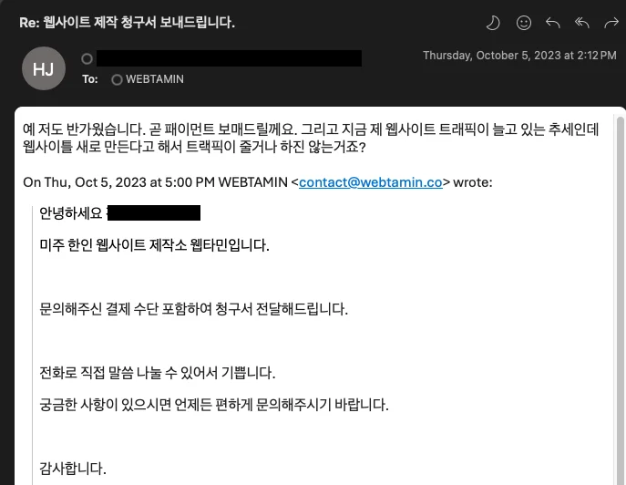
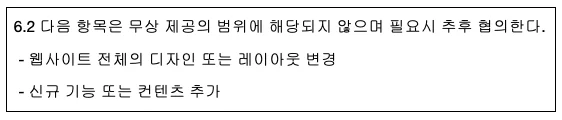
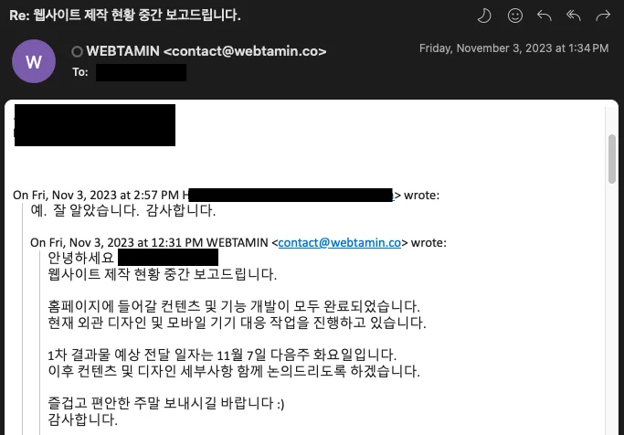
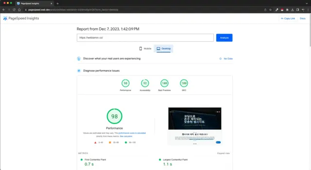

웹사이트 제작 의뢰를 생각중이신가요? 그렇다면 제작 업체를 이곳저곳
알아보고 계실겁니다. 이번 칼럼에서는 제작 업체를 선정할 때 반드시
점검해야할 것들을 알려드리겠습니다.
여러 웹사이트 제작 플랫폼 및 업체의 실제 고객 후기를
근거로 가장 중요한 4가지를 선정했습니다.
어렵고 복잡할 것 없습니다. 딱 이 4가지 조건에 부합하는지만
살펴보세요. 제작 의뢰 이후 골치 아플 일이 크게 줄어들 것입니다.
1. 원활한 소통
웹사이트 제작 과정에서 가장 중요한 것은 소통입니다. 의뢰인에게
있어
연락이 안 되는 제작사만큼 실망스러운 것도 없습니다. 답이 없는 이메일, 응답 없는 전화, 늦은 답장은 어떤 이유로든
용납하기 어렵습니다.
프로젝트 진행중에는 문제 없다가 제작이 끝나고 연락 두절이 되는
경우가 많습니다. 의뢰인은 부모를 잃은 아이처럼 필요한 도움을 전혀
얻을 수 없게 됩니다. 웹사이트의 컨텐츠 업데이트, 디자인 수정 등의
유지 보수 작업이 불가능하게 됩니다.
제작사에 문의시 응답 시간을 확인하세요. 반응이 더딘 제작사와는 이후 소통의 문제를 겪게될 수 있습니다.

웹타민은 모든 제작 단계에 걸쳐 의뢰인의 연락에 신속하게 응답하고
있습니다. 의뢰인의 편의에 따라 이메일, 문자, 전화 모두로 연락
가능합니다. 의뢰인은 복잡한 부서 연결 없이 직통으로 담당자와
소통할 수 있습니다.
2. 투명한 비용
예고 없는 추가 비용을 청구하는 업체들이 있습니다. 프로젝트
진행중에는 추가 비용에 대한 언급이 전혀 없습니다.
나중에 제작비를 지불할 때가 되어서야 예상치 못한 비용을
확인하게 됩니다.
내용은 디자인 수정 작업, 기능 추가, 컨텐츠 변경 등 미리 설명을
듣지 못한 부분들입니다.
의뢰인은 사전에 고지되지 않은 비용에 대해서는 불합리적이라고
생각할 수밖에 없습니다. 사기 당한 것 같은 느낌을 지울 수 없게
됩니다. 비용을 순순히 지불하지 않는 이상 제작사와의 갈등을 피할 수
없게 됩니다.
제작사가 제공하는 제안서 또는 계약서에 비용 부분이 꼼꼼하게
명시되어 있는지 확인하세요.
제작비에 대한 정보가 두루뭉술한 곳은 꼭 의심해보시길 바랍니다.

웹타민은 제작에 들어가는 모든 비용을 투명하게 제시합니다. 의뢰인이
어떤 서비스를 받고 거기에 얼만큼의 비용이 발생되는지 계약 전에
미리 알려드립니다.
3. 제작일 준수
의뢰인이 불만을 겪는 주된 요인 중 다른 하나는 제작 기간
지연입니다. 의뢰인은 초기에 들었던 제작 완료일이 지나서 결과물을
받게 됩니다. 제작일이 늦춰진 것에 대해 납득할만한 이유도 없습니다.
결국 의뢰인은 늦은 웹사이트로 인해 사업 일정에 차질이 생깁니다.
제작일이 타업체에 비해 극적으로 짧은 업체는 주의깊게
살펴보세요.
적어도 빠른 결과물 전달이 가능한 이유에 대해 설명되어 있어야할
겁니다.

웹타민은 제시간 결과물 전달을 원칙으로 하고 있습니다. 제작 과정
전반에 걸쳐 각각의 일정에 대한 소요 시간을 미리 전달해드립니다.
4. 높은 사용성
사용성이란 방문자가 웹사이트를 이용하며 느끼는 만족도입니다. 빠른
로딩 속도, 편리한 페이지 이동, 직관적인 사이트 구조 등의 요소가
혼합되어 좋은 사용성을 만들어냅니다. 사용자의 입장에서 설계되지
않은 웹사이트는 클릭 하나 하나마다 불편한 사용감을 느낄 수 밖에
없습니다.
의뢰인이 웹사이트에 대해 기술적인 지식을 갖추고 있는 경우는
드뭅니다. 웹사이트의 외형만을 보고 좋고 나쁨을 평가할 때가
많습니다. 가장 중요한 것은 웹사이트의 겉모습이 아닌 사용성입니다.
웹사이트 제작을 맡길 때는 제작사의 포트폴리오 웹사이트를 최소
한 군데는 방문해보세요.
속도는 어떠한지, 직접 여러 탭을 이동해보고 버튼도 누르면서 직접
한번 시험해보시기 바랍니다.

웹타민은 초기 구상 단계에서부터 사용자의 경험을 고려하여
웹사이트를 설계하고 있습니다. 최상급의 속도를 유지하고 편리한
사용자 경험을 제공하는 웹사이트를 제작하고 있습니다.
지금까지 웹사이트 제작 의뢰시 점검해야할 필수 사항 4가지를
알아보았습니다.
- 원활한 소통
- 투명한 비용
- 제작일 준수
- 높은 사용성
웹사이트 제작 업체 조사시 이 4가지를 잘 검토해보시길 바랍니다.
웹사이트 관련 궁금한 점이나 제작을 원하신다면 문의주세요.